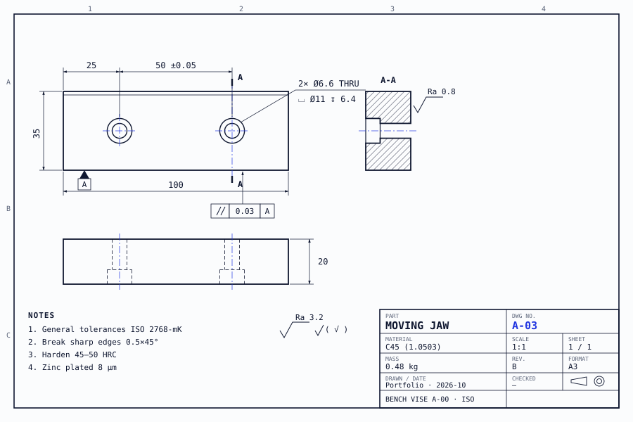
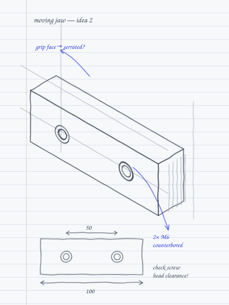
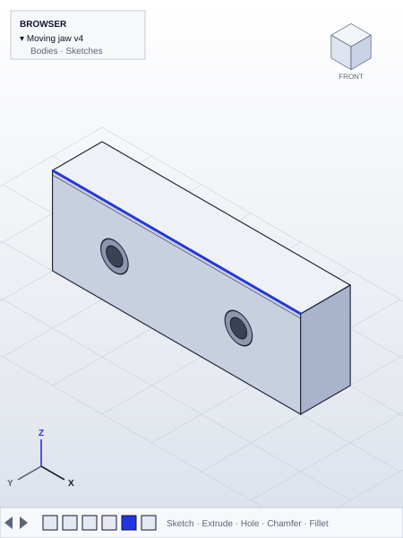
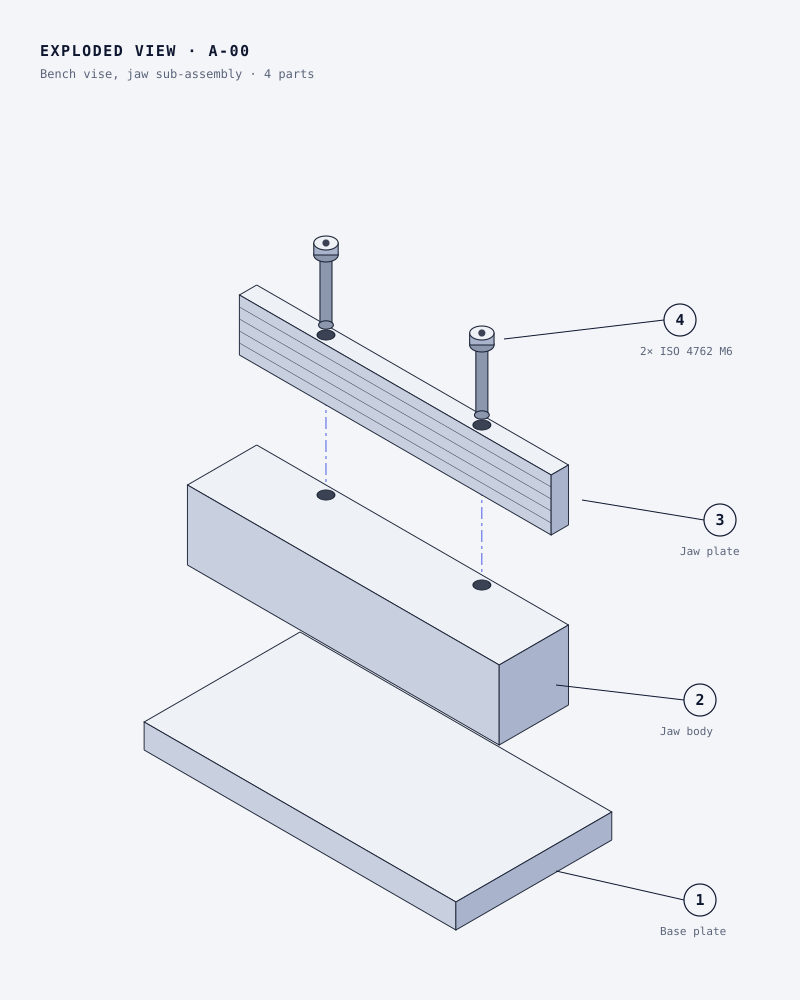
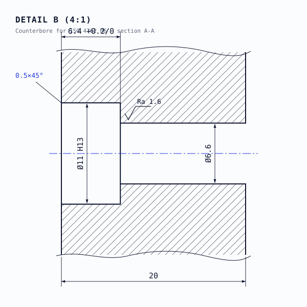
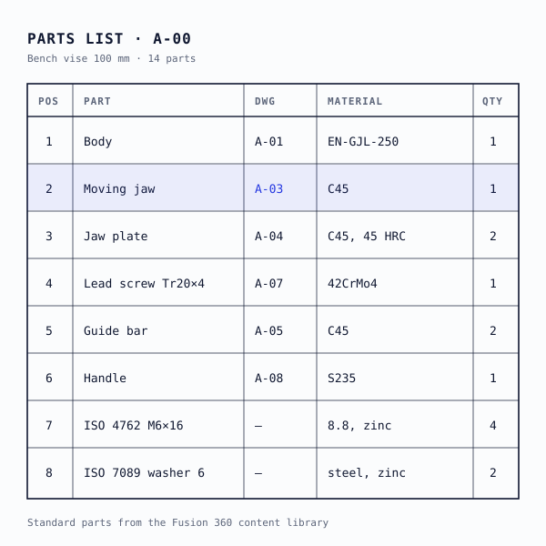
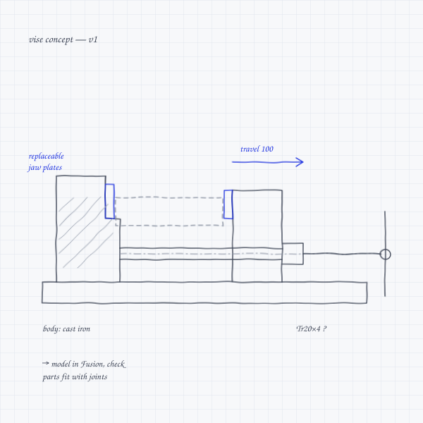
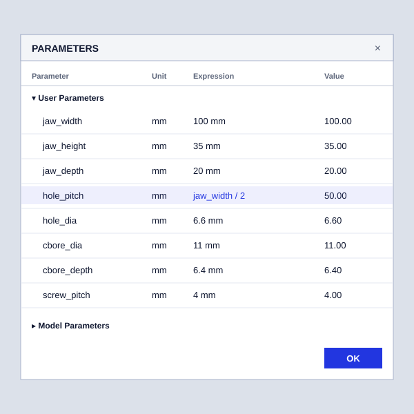

Traditional Sketching + CAD : I reconnected with my roots in fine arts [ charcoal, pencil, acrylics, and artistic anatomy ] to bridge traditional sketching with technical design. As a personal passion, this workflow allows me to draft, refine, and model functional physical products straight from hand-drawn ideas.
I reconnected with my roots in fine arts [ charcoal, pencil, acrylics, and artistic anatomy ] to bridge traditional sketching with technical design. As a personal passion, this workflow allows me to draft, refine, and model functional physical products straight from hand-drawn ideas.








I draw by hand before I model. These pages show how a part changes before it reaches Fusion.